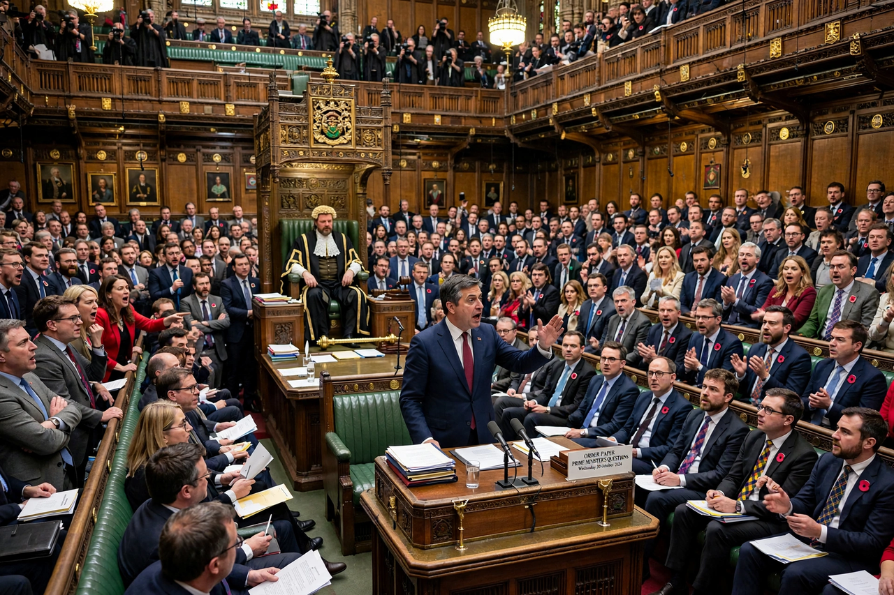

Prime Minister's Questions (PMQs, officially known as Questions to the Prime Minister) is a constitutional convention in the United Kingdom, currently held as a single session every Wednesday at noon when the House of Commons is sitting, during which the prime minister answers questions from members of Parliament. It is the most watched and theatrical set-piece of the parliamentary week, and the principal weekly confrontation between the prime minister and the Leader of the Opposition.
| Prime Minister's Questions | |
| Venue | House of Commons chamber, Palace of Westminster |
|---|---|
| When | Wednesdays, 12:00 noon, 30 minutes (since 1997) |
| Participants | Prime Minister; Leader of the Opposition (six questions); other MPs |
| Origins | Fixed question slots from 1961; earlier ad hoc arrangements from the 1880s |

PMQs in the Commons chamber: the weekly half-hour of questions to the prime minister.
Questions to the prime minister developed informally from the 1880s, when questions to the premier were taken at the end of the ordinary question list. In 1961 Harold Macmillan agreed to a fixed experiment of two fifteen-minute slots, on Tuesdays and Thursdays. In 1997 Tony Blair consolidated these into a single thirty-minute session on Wednesdays, a change criticised at the time as reducing scrutiny but defended as making the event more substantial. Margaret Thatcher later wrote that she had dreaded the sessions at first; John Major found them among the most nerve-racking duties of the office.
The session opens with the prime minister listing the day's engagements, in response to a standard "No. 1" question. The Leader of the Opposition is entitled to six questions, usually split into two blocks of three, and the leader of the next-largest opposition party to two. Other MPs are called by the Speaker, traditionally alternating between government and opposition sides, and many questions are tabled in advance while others are topical. Ministers may be substituted when the prime minister is abroad — deputy prime ministers and foreign secretaries have stood in — and the exchanges are broadcast live on television and radio.
PMQs is famous for its adversarial, often rowdy atmosphere: cheering, jeering and planted questions from government backbenchers ("Dorothy Dixers" in Australian usage). Speakers have repeatedly appealed for better behaviour, and the session is widely criticised as "Punch and Judy politics" that informs the public little. Defenders argue that it forces the prime minister to master the whole range of government business weekly, provides a unique, unscripted test of a leader's command, and is a cornerstone of executive accountability to the lower house. Versions of the institution have been adopted in several other parliaments, including the Scottish Parliament (First Minister's Questions) and the Welsh Senedd.